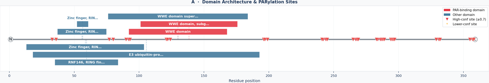
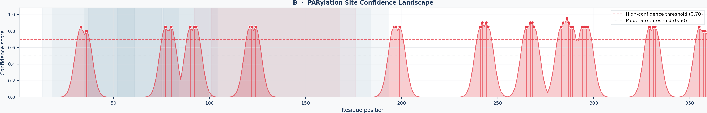
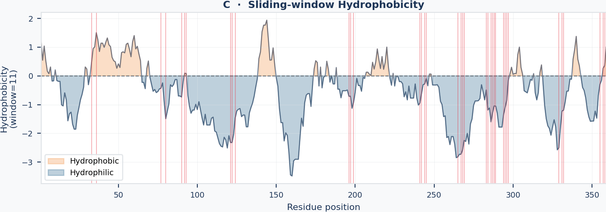
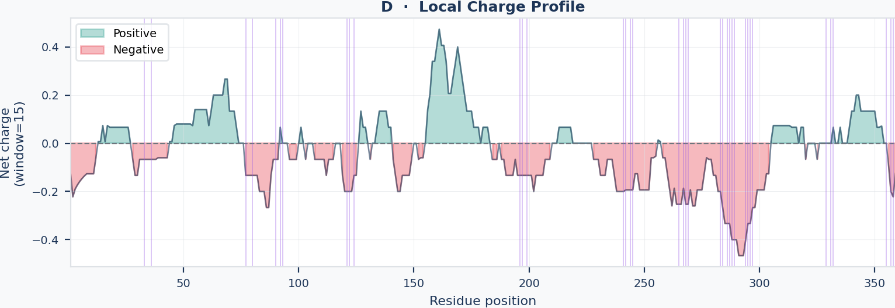
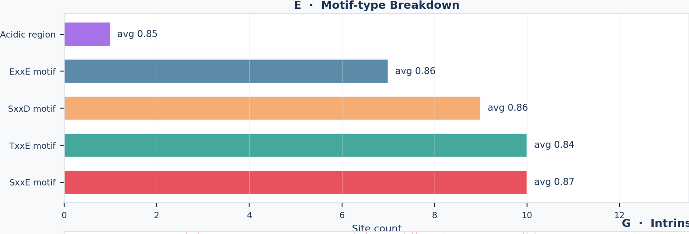
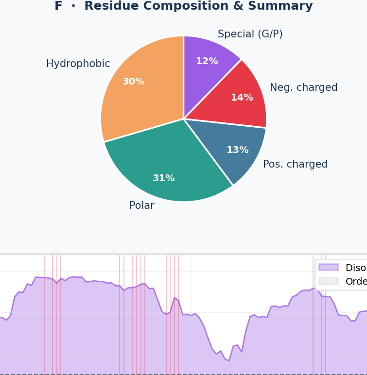
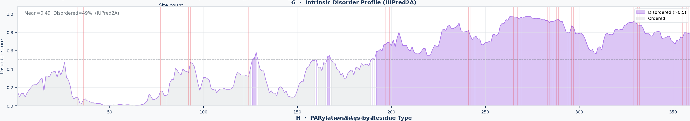
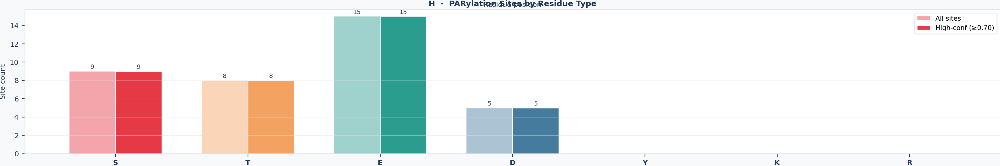

ParylationPredictor identifies PAR-binding domains and predicts ADP-ribosylation sites from UniProt IDs, raw sequences, or FASTA files — in a single command.
From raw sequence to publication-ready figures and data — no intermediate steps required.
Queries the InterPro API for 11 known PAR-binding domain families including WWE, Macro, BRCT, PBZ, RRM, and PARP catalytic domains.
Scores residues using SxxE, SxxD, TxxE, ExxE, and acidic-cluster motifs with position-weighted confidence scoring.
Integrates IUPred2A for per-residue intrinsic disorder scores, highlighting sites in flexible regions most amenable to modification.
Fetches known PTMs from PHOSPHO.ELM, pathways from Reactome & KEGG, and relevant literature from EuropePMC automatically.
Domain architecture, confidence landscape, hydrophobicity, charge, motif breakdown, residue composition, disorder profile, and residue-type breakdown.
PNG + PDF + SVG figures, formatted Excel workbook, interactive HTML report, structured JSON, and TSV — all in a named protein folder.
Generated from a single command: detector.export_to_folder(result)

A linear map of the protein backbone (grey bar) with PAR-binding domains drawn as colored, annotated blocks. Each domain block is labeled with its InterPro identifier and name (e.g., WWE domain, Macro domain, BRCT). A greedy track-stacking algorithm prevents overlapping labels when multiple domains are closely spaced. High-confidence PARylation sites (score ≥0.70) are overlaid as vertical tick marks, allowing you to read off immediately whether sites fall inside or outside known PAR-binding modules. How to interpret: a site that falls within a recognized domain block is particularly noteworthy, as it suggests the residue may be directly involved in PAR recognition or modification. Sites flanking domain boundaries may affect domain folding or interdomain communication.

A continuous sliding-window score plotted across all residue positions. Individual site scores are smoothed into a landscape using a nine-residue window to reveal regional hotspots rather than isolated peaks. Horizontal dashed threshold lines at 0.70 (high confidence) and 0.50 (medium confidence) divide the y-axis into three zones. Individual high-confidence sites are marked with red dots. How to interpret: broad elevated plateaus indicate that an entire segment of the protein is enriched for PARylation motifs — a hallmark of intrinsically disordered regulatory regions. Sharp isolated peaks suggest a single dominant modification site. Flat low-score regions are unlikely to be PARylated under normal conditions.

Kyte–Doolittle hydrophobicity scores averaged over a nine-residue sliding window. Positive values (above zero) indicate hydrophobic segments that are typically buried in the protein core; negative values indicate hydrophilic, solvent-exposed stretches. The zero line is drawn as a reference. How to interpret: PARylation and most other post-translational modifications occur on solvent-accessible residues. Predicted sites that fall in strongly hydrophobic segments should be treated with caution — these residues may be structurally buried and inaccessible to PARP enzymes in the folded protein. Conversely, predicted sites in hydrophilic troughs are structurally more likely to be modified in vivo.

Net electrostatic charge computed residue-by-residue (Asp and Glu contribute −1; Lys and Arg contribute +1; His contributes +0.1) and smoothed with a nine-residue sliding window. Negative values indicate acidic segments; positive values indicate basic patches. How to interpret: acidic clusters — stretches of consecutive negatively charged residues — are primary PARylation initiation zones because PARP enzymes preferentially modify glutamate and aspartate residues in acidic contexts. A deep sustained trough in this panel, especially one that correlates with an elevated region in the confidence landscape (Panel B), is a strong indicator of a biologically relevant PARylation hotspot. Basic patches seldom carry PARylation sites but may instead be PAR-binding surfaces.

A bar chart showing how many high-confidence predicted sites arise from each scoring motif: SxxE (serine at position i, glutamate at i+3), SxxD, TxxE, ExxE, and acidic cluster (three or more D/E residues within a five-residue window). Each motif type carries a distinct base confidence weight in the scoring model. How to interpret: a protein dominated by SxxE motifs is likely modified by classical PARP1/PARP2-type enzymes, while a high proportion of acidic cluster sites suggests large-scale modification of disordered glutamate-rich regions, common in histones and RNA-binding proteins. Proteins with a balanced motif distribution may have multiple independent PARP-enzyme interactions. This panel is particularly useful when comparing paralogs or family members.

A pie chart of the full amino-acid composition of the protein, with the ten most abundant residues displayed. Alongside the chart, a text table summarises key prediction metrics: total number of predicted sites, high-confidence count, the top-scoring site, and the list of detected PAR-binding domains. How to interpret: a protein with a high percentage of Glu (E) and Asp (D) residues is intrinsically more likely to accumulate PARylation predictions. The composition panel helps contextualise whether a high site count reflects genuine biology or simply an acidic sequence bias. Cross-reference the top site with the domain architecture (Panel A) and disorder profile (Panel G) to assess its biological relevance.

Per-residue intrinsic disorder scores derived from IUPred2A. Scores range from 0 (fully ordered, structured) to 1 (fully disordered, no stable 3D conformation). Regions above the 0.5 threshold are shaded in purple and classified as intrinsically disordered regions (IDRs). High-confidence PARylation sites are overlaid as tick marks at the bottom of the panel. How to interpret: intrinsic disorder is a major enabling feature for post-translational modifications: IDRs are solvent-exposed by definition and do not require unfolding for enzyme access. A predicted PARylation site that falls within a disordered region (score >0.5) is significantly more likely to be accessible for modification in vivo. Sites in highly ordered regions (score <0.3) should be considered lower-priority candidates unless supported by structural evidence of local exposure.

A grouped bar chart comparing site counts across the seven residue types that can carry PARylation: Ser (S), Thr (T), Glu (E), Asp (D), Tyr (Y), Lys (K), and Arg (R). Two bars are drawn side by side for each residue type — a lighter bar for all predicted sites and a solid bar for high-confidence sites only (score ≥0.70). How to interpret: the ratio of high-confidence to total sites for each residue type reveals the specificity of the prediction. A residue type where nearly all predicted sites are also high-confidence (ratio close to 1) indicates a strong motif context for that amino acid in this protein. The dominant residue type often reflects the primary PARP enzyme involved: PARP1 and PARP2 prefer Glu/Asp under DNA-damage conditions, while TNKS1/2 preferentially modify Gly residues in a different context. Serine and threonine PARylation has been documented for PARP1 and PARP3 in specific cellular conditions.
Requires Python 3.8+ and a few standard scientific packages.
# Clone from GitHub
git clone https://github.com/gheinani/parbm-detector.git
cd parbm-detector# Installs the package and all dependencies
pip install -e .
# Dependencies installed automatically:
# requests · matplotlib · numpy · openpyxl · plotlyimport parbm_detector_pkg as parbm
print(parbm.__version__) # → 3.1.0The example below reproduces the RNF146 output shown in the gallery above.
from parbm_detector_pkg import PARBMDetector
detector = PARBMDetector()
# Analyze RNF146 (WWE domain, PAR-binding)
result = detector.analyze("Q9NTX7")
detector.print_analysis(result)
from parbm_detector_pkg import PARBMDetector
detector = PARBMDetector()
# Analyze
result = detector.analyze("Q9NTX7")
# Enrich with disorder, PTMs, pathways, literature
result = detector.enrich_result(result)
# Export everything to Q9NTX7_RNF146/ folder
detector.export_to_folder(result, base_dir=".")
# Works with raw amino-acid sequences too
seq = "MSEQ...LNRK"
result = detector.analyze(seq)
# FASTA files — returns a list of results
results = detector.analyze_fasta_file(
"proteins.fasta"
)
for r in results:
detector.export_to_folder(r, base_dir="output")
All files are placed in a folder named {UniProtID}_{gene}/
All methods live on the PARBMDetector class.
Accepts a UniProt ID, raw sequence, FASTA string, or file path. Fetches protein metadata from UniProt, detects PAR-binding domains via InterPro, and predicts PARylation sites.
input_data — str, auto-detected typeAdds disorder scores (IUPred2A), known PTMs (PHOSPHO.ELM), pathway annotations (Reactome + KEGG), and literature (EuropePMC) to a result dict.
skip — list of modules to omit: 'disorder', 'ptm', 'pathways', 'literature'Creates a named folder and writes all output files: composite figure (PNG/PDF/SVG), 8 individual panels (×3 formats), Excel, HTML, JSON, TSV.
Prints a formatted text report to stdout with identity block (protein, gene, organism, length), PARylation summary (high-confidence count, top site), and a 10-row site detail table.
Renders the 8-panel composite figure and saves it as PNG + PDF + SVG. Also saves 8 individual panel files.
Writes a formatted openpyxl workbook with 4 sheets: Summary, PARylation Sites, Domains, and full Sequence with annotation.
For questions about the tool, collaborations, or to report issues, contact the development group.
Department of BioMedical Research · University of Bern